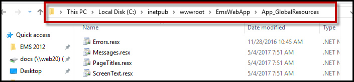
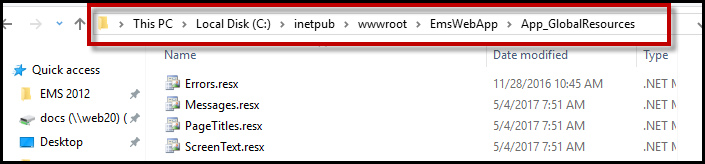

Example Successful Installation

Reflected in EMS as follows (example is French-Canadian).

Previous versions of EMS referred to this feature as "Web Cultures."
If you need to add language translation capability for your Everyday User templates or EMS Kiosk pages (menu text, menu items, and help text items), then you must configure language translations. Each translation you configure represents a language for which translations must be provided in your EMS Everyday User Applications.
The EMS Kiosk App uses a JSON translation file instead of a translation spreadsheet. See Configure Language Translations in EMS Kiosk App for more information.
Values for data items (e.g. Event Types like “Meeting”, “Training”, etc. or Room Types like “Workspace”, “Conference Room”, etc.) configured within EMS or dynamic information that is inputted by an EMS user or Virtual EMS web user (e.g. Event Name like “HR Meeting”, Comments, Special Instructions, etc.) are not translated.
For the translation to affect an Everyday Applications user, two conditions should be met:

Reflected in EMS as follows (example is French-Canadian).

On the EMS Desktop Client menu bar, click Configuration > Everyday User Applications > Language Translations. The Language Translations window opens, listing all the translations that are currently configured in your EMS database.

Language Translations Window
Click New. The Language Translation dialog box opens. By default, the language is set to English (United States).

Language Translation Tab
After you configure a language translation, it is displayed on the Translations tab in various configuration areas in EMS.